每個片假名取自漢字的哪個部件，又怎麼寫
| 音 | 片假名 | ← 字源 | 筆順 | 備註 |
|---|---|---|---|---|
| ア行 | ||||
| a | ア | ←阿 | 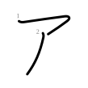 |
|
| i | イ | ←伊 | 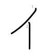 |
|
| u | ウ | ←宇 | 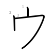 |
同源 |
| e | エ | ←江 | 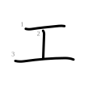 |
|
| o | オ | ←於 | 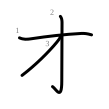 |
同源 |
| カ行 | ||||
| ka | カ | ←加 | 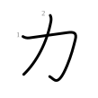 |
同源 |
| ki | キ | ←幾 | 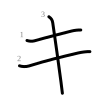 |
同源 |
| ku | ク | ←久 | 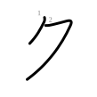 |
同源 |
| ke | ケ | ←介 | 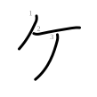 |
|
| ko | コ | ←己 | 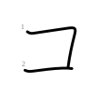 |
同源 |
| サ行 | ||||
| sa | サ | ←散 | 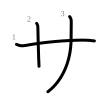 |
|
| shi | シ | ←之 | 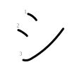 |
同源 |
| su | ス | ←須 | 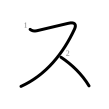 |
|
| se | セ | ←世 | 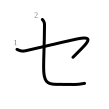 |
同源 |
| so | ソ | ←曽 | 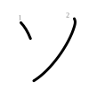 |
同源 |
| タ行 | ||||
| ta | タ | ←多 | 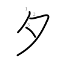 |
|
| chi | チ | ←千 | 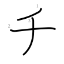 |
|
| tsu | ツ | ←川 | 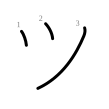 |
同源 |
| te | テ | ←天 | 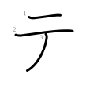 |
同源 |
| to | ト | ←止 | 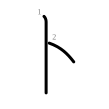 |
同源 |
| ナ行 | ||||
| na | ナ | ←奈 | 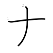 |
同源 |
| ni | ニ | ←二 | 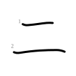 |
|
| nu | ヌ | ←奴 | 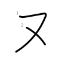 |
同源 |
| ne | ネ | ←祢 | 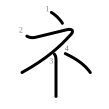 |
同源 |
| no | ノ | ←乃 | 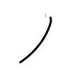 |
同源 |
| ハ行 | ||||
| ha | ハ | ←八 | 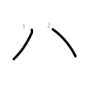 |
|
| hi | ヒ | ←比 | 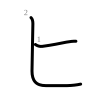 |
同源 |
| fu | フ | ←不 | 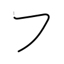 |
同源 |
| he | ヘ | ←部 | 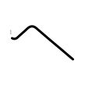 |
同源 |
| ho | ホ | ←保 | 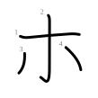 |
同源 |
| マ行 | ||||
| ma | マ | ←末 | 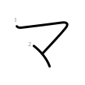 |
同源 |
| mi | ミ | ←三 | 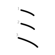 |
|
| mu | ム | ←牟 | 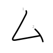 |
|
| me | メ | ←女 | 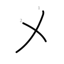 |
同源 |
| mo | モ | ←毛 | 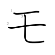 |
同源 |
| ヤ行 | ||||
| ya | ヤ | ←也 | 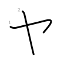 |
同源 |
| yu | ユ | ←由 | 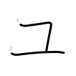 |
同源 |
| yo | ヨ | ←与 | 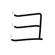 |
同源 |
| ラ行 | ||||
| ra | ラ | ←良 | 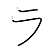 |
同源 |
| ri | リ | ←利 | 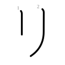 |
同源 |
| ru | ル | ←流 | 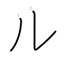 |
|
| re | レ | ←礼 | 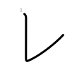 |
同源 |
| ro | ロ | ←呂 | 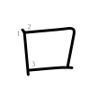 |
同源 |
| ワ行 | ||||
| wa | ワ | ←和 | 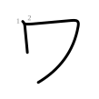 |
同源 |
| wo | ヲ | ←乎 | 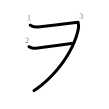 |
|
| ン | ||||
| n | ン | ←尔 | 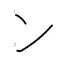 |
|